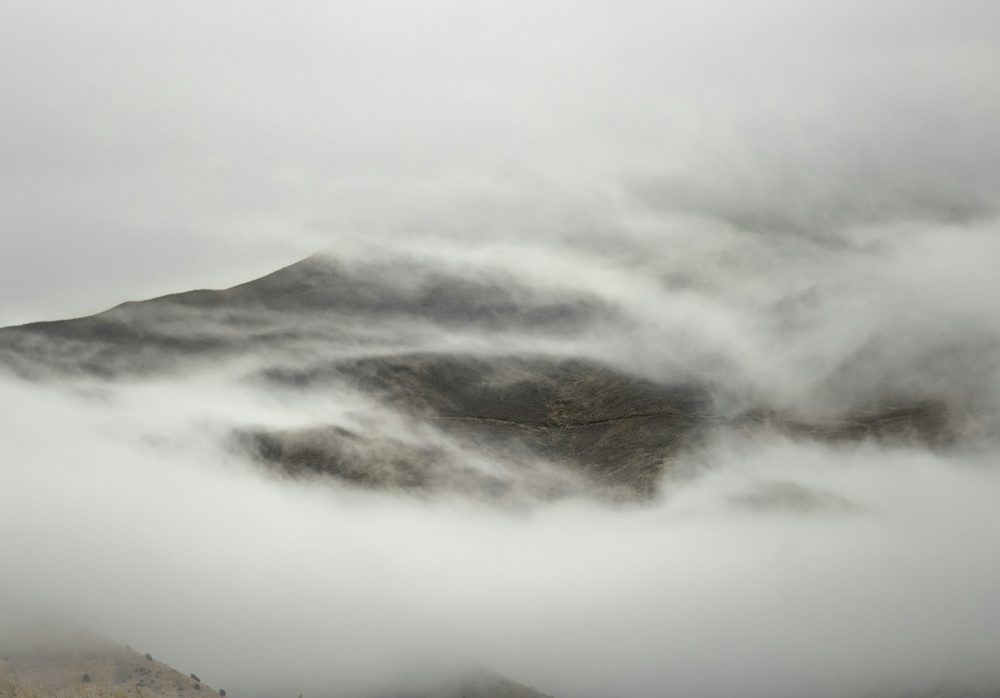

品牌视觉 / 产品概念 / 包装方向
山行·祈福香囊
为“户外探险者的中草药护身香囊”建立山野、祈福、手作的视觉语言：蓝金云纹、山形徽章、织物质感和限量编号感。
- 品牌概念与核心文案
- 产品视觉、材质语言、包装情绪
- AI 图像探索与设计筛选
Profile
我是 Naso，也使用“拓荒艺栈”作为中文创作名。我关注小众品牌、手作器物、文旅与生活方式项目中的“气质成形”：从关键词、视觉方向、AI 概念图，到 Logo、包装、页面、社媒内容，帮助项目建立清晰且不模板化的第一印象。
我的工作方式偏编辑型和系统型：先收束情绪与定位，再做视觉规则，最后用 AI 与设计工具快速生成、筛选、修正、落地。整体审美倾向于东方、山野、极简和艺术感。
Selected Works
以展示型大卡片组织作品，按品牌视觉、AI 视觉探索、产品与包装三个方向呈现。
品牌视觉 / 产品概念 / 包装方向
为“户外探险者的中草药护身香囊”建立山野、祈福、手作的视觉语言：蓝金云纹、山形徽章、织物质感和限量编号感。
AI 辅助视觉方向
用雪山、雾气和深色层次搭建品牌叙事背景，让页面从素材陈列变成具有东方山野气息的完整气质场。

情绪图 / 版式背景
把自然图像处理成适合网页、海报和社媒封面的暗色背景，以极简留白保留高级感与可读性。

产品视觉
通过材料纹理、刺绣线条和山形徽章，让小件产品拥有可识别的品牌细节。

拍摄风格 / 手作陈列
用低饱和材质、木质场景和符号标签建立“手作但不粗糙”的品牌画面。
Capability / Method
整理品牌关键词、受众、情绪板和竞品差异，输出可执行的视觉方向，把东方、山野、极简、艺术感转成具体规则。
用 AI 快速探索海报、产品、包装、空间和社媒封面，并建立筛选标准，避免 AI 味泛滥。
把 Logo、色彩、字体、图形、材质和版式整理成可复用规则，适配独立站与内容平台。
从首屏、作品卡片、联系路径到移动端检查，确保页面高级、清晰，并且方便持续迭代。
Contact
适合合作：新品牌视觉、AI 视觉方向、产品包装、独立站视觉、小红书封面与内容视觉、文旅/手作/生活方式项目。